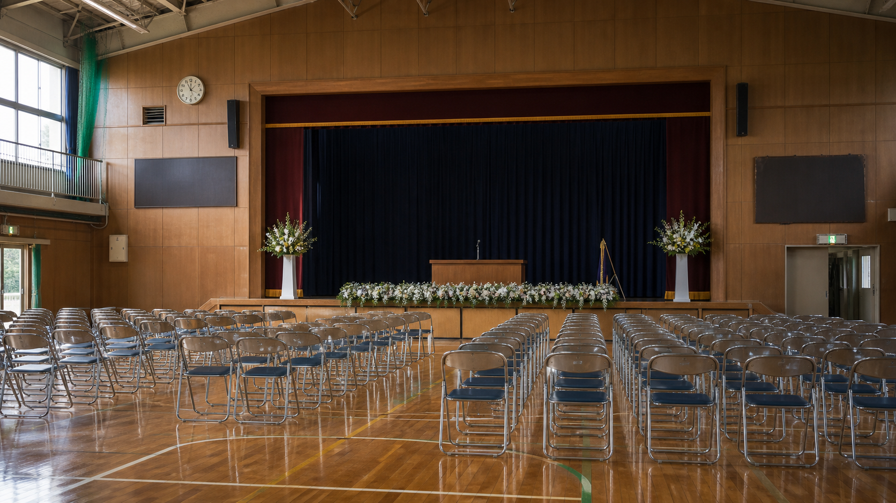

体育館に設けられた閉校記念式典会場。
式次第
| 時刻 | 内容 | 担当 |
|---|---|---|
| 09:30 | 開式 | 実行委員会 |
| 09:45 | 学校沿革紹介 | 資料部会 |
| 10:20 | 卒業生代表あいさつ | 平成18年度卒業生 |
| 10:45 | 記念展示案内 | PTA OB会 |
展示資料番号

展示ケース控えの再構成画像。図書室側の目録と照合することで、封緘箱の扱いが分かります。
展示ケースCには、平成18年度6年1組の寄せ書き、校外学習ノート、図書室貸出カードを収めています。C-0714の箱は封緘テープ付きで、式典当日は開封展示されませんでした。
式典担当の展示順
| 順 | 展示名 | 状態 | 備考 |
|---|---|---|---|
| 1 | 寄せ書き台紙 | 公開 | 卒業生代表あいさつ前に展示。 |
| 2 | 貸出カード束 | 一部非公開 | 個人名の確認が必要。 |
| 3 | 補修写真控え | 説明札のみ | PTA資料と同名の写真あり。 |
| 4 | 封緘箱 | 未開封 | 図書室へ戻す。 |
展示担当メモには「C-0714は図書室資料と照合後に公開」とあります。
式典スタッフの控え
展示ケースCは来賓動線から少し外れた位置に置かれました。説明札には「平成18年度資料」とだけあり、事件や事故を示す言葉はありません。
それでも、撤収時の写真ではC-0714の箱だけ向きが逆になっています。スタッフの一人は「誰かが見やすいように直したのだと思った」と話しています。